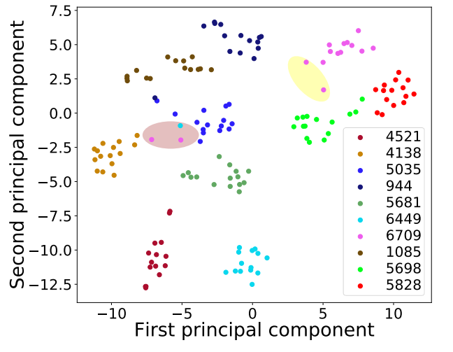

Adaspeech: Adaptive Text to Speech for Custom Voice
Contents
Audio Samples1.1 Adaptation voice on LibriTTS, VCTK and LJSpeech
Ablation Studies
2.1 Ablation Study on VCTK
2.2 Utterance-level Visualization Analysis
2.3 Finetune CLN and Finetune Other Decoder Parameters
2.4 Varying Adaptation Data on AdaSpeech
Audio Samples
Adaptation voice on LibriTTS, VCTK and LJSpeech

LJSpeech speaker : Especially as no more time is occupied or cost incurred in casting setting or printing beautiful letters.
| GT | GT mel + MelGAN | Baseline (Spk Emb) | Baseline (Decoder) | AdaSpeech |
|---|---|---|---|---|
VCTK speaker : Six spoons of fresh snow peas, five thick slabs of blue cheese, and maybe a snack for her brother Bob.
| GT | GT mel + MelGAN | Baseline (Spk Emb) | Baseline (Decoder) | AdaSpeech |
|---|---|---|---|---|
Libritts speaker : And so, howsoever reluctantly, she had gone.
| GT | GT mel + MelGAN | Baseline (Spk Emb) | Baseline (Decoder) | AdaSpeech |
|---|---|---|---|---|
Ablation Studies
Audios of Ablation Study on VCTK
VCTK speaker : There is , according to legend, a boiling pot of gold at one end.
| AdaSpeech | AdaSpeech w/o CLN | AdaSpeech w/o PL-ACM | AdaSpeech w/o UL-ACM |
|---|---|---|---|
Audios of Utterance-level Visualization Analysis
Pink Point in Brown Circle
| You little scamp! | Well! why do you not enter? |
|---|---|
Blue Point in Brown Circle
| The Fairy. |
|---|
Audios of Finetune CLN and Finetune Other Decoder Parameters

VCTK speaker : Ask her to bring these things with her from the store.
| Finetune CLN | Finetune Other Decoder Parameters |
|---|---|
Audios of Varying Adaptation Data on AdaSpeech
LJSpeech speaker : especially as no more time is occupied or cost incurred in casting setting or printing beautiful letters.
| 1 Adaptation Sample | 2 Adaptation Samples | 5 Adaptation Samples | 10 Adaptation Samples | 20 Adaptation Samples |
|---|---|---|---|---|
VCTK speaker : Six spoons of fresh snow peas, five thick slabs of blue cheese, and maybe a snack for her brother Bob.
| 1 Adaptation Sample | 2 Adaptation Samples | 5 Adaptation Samples | 10 Adaptation Samples | 20 Adaptation Samples |
|---|---|---|---|---|